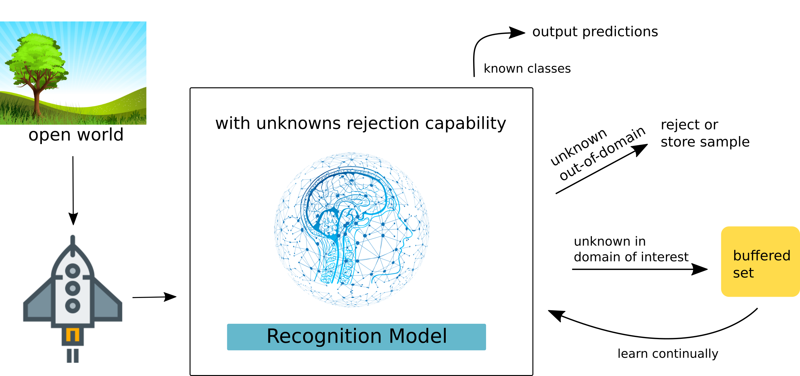

Personal Pages
Dr. (cand.) Gusti Ahmad Fanshuri Alfarisy
from world import netizens
print("Hello world!")
print("Greetings from Borneo Islands...!")
Research Agendas

We have experienced the outstanding performance of artificial intelligence surpassing human capability. Yet, they are unable to acknowledge fully that they do not know and learn the novel phenomenon continuously like humans. In my current research agenda, I am exploring a technique to enhance an agent to identify unknown categories and learn them continuously in domain-specific problem. This will make the agent become reliable and able to adapt to the open-world environment in the agent interest only. The applications can be applied to ecology, healthcare, smart cities, robotics, or intelligent systems.
Short Biography
Hi, greetings from Borneo Island! I am a lecturer at Institut Teknologi Kalimantan or Kalimantan Institute of Technology at the Department of Informatics. Currently, I am pursuing my Ph.D. degree in Artificial Intelligence at the School of Digital Science, Universiti Brunei Darussalam under the supervision of Dr. Owais Ahmed Malik and Dr. Ong Wee Hong enrolled in 2021.
I have been teaching several topics including algorithms and programming languages, data structures, numerical methods, machine learning, and software engineering. I have reviewed several articles in Springer and Elsevier Journals. My research interest includes:
- Open-World Lifelong Machine Learning
- Computer Vision
- Neural Architecture Search
- Machine Learning
- Natural Language Processing

DBSCAN - Metode Clustering pada Data Berpotensi Noise
January 18, 2023